<!DOCTYPE html>
<html lang="kh"></html>
<html>
 
<head>
<meta charset="utf-8">
<title>មជ្ឈមណ្ឌលថែរភ្សាសុខភាពប៉េកាំង</title>
<style>
 
* {
  box-sizing: border-box;
 
}

body {
  font-family: Arial;
  padding: 10px;
  background: #f1f1f1;
}

/* 头部标题 */
.header {
  padding: 30px;
  text-align: center;
  background: #FFFF66;
}
 
.header h1 {
  font-size: 50px;
}
 
/* 导航条 */
.topnav {
  overflow: hidden;
  background-color: #c35252;
}
 
/* 导航条链接 */
.topnav a {
  float: left;
  display: block;
  color: #f2f2f2;
  text-align: center;
  padding: 24px 26px;
  text-decoration: none;
}
 
/* 链接颜色修改 */
.topnav a:hover {
  background-color: #ddd;
  color: black;
}

 
/* 图像部分 */
.fakeimg {
  background-color: #aaa;
  width: 100%;
  padding: 20px;
}
 
/* 文章卡片效果 */
.card {
  background-color: white;
  padding: 20px;
  margin-top: 20px;
}
 
/* 列后面清除浮动 */
.row:after {
  content: "";
  display: table;
  clear: both;
}
 
/* 底部 */
.footer {
  padding: 20px;
  text-align: center;
  background: #ddd;
  margin-top: 20px;
}
 
/* 响应式布局 - 屏幕尺寸小于 800px 时，两列布局改为上下布局 */
@media screen and (max-width: 800px) {
  .leftcolumn, .rightcolumn {   
    width: 100%;
    padding: 0;
  }
}
 
/* 响应式布局 -屏幕尺寸小于 400px 时，导航等布局改为上下布局 */
@media screen and (max-width: 400px) {
  .topnav a {
    float: none;
    width: 100%;
  }
}
</style>
</head>

<body>
  
<div class="header">
  <h1></h1>
  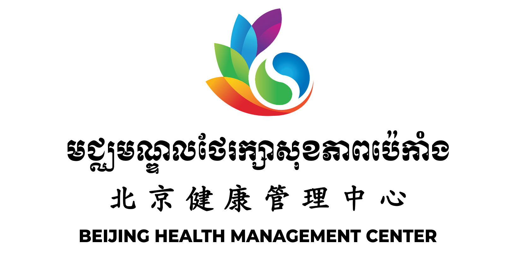
 <p> 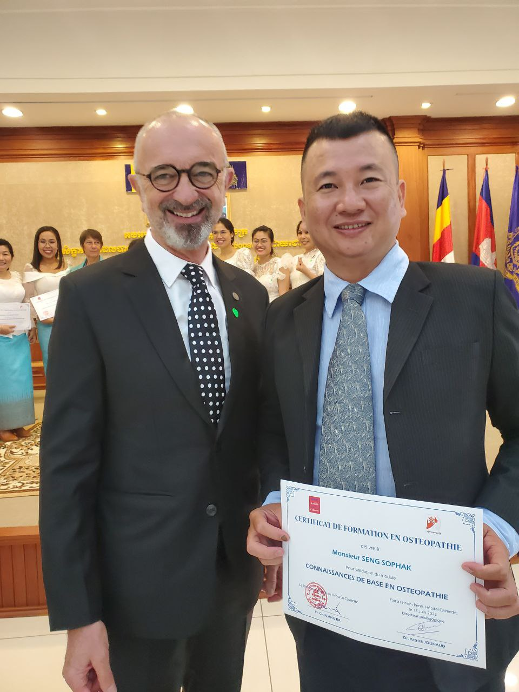
       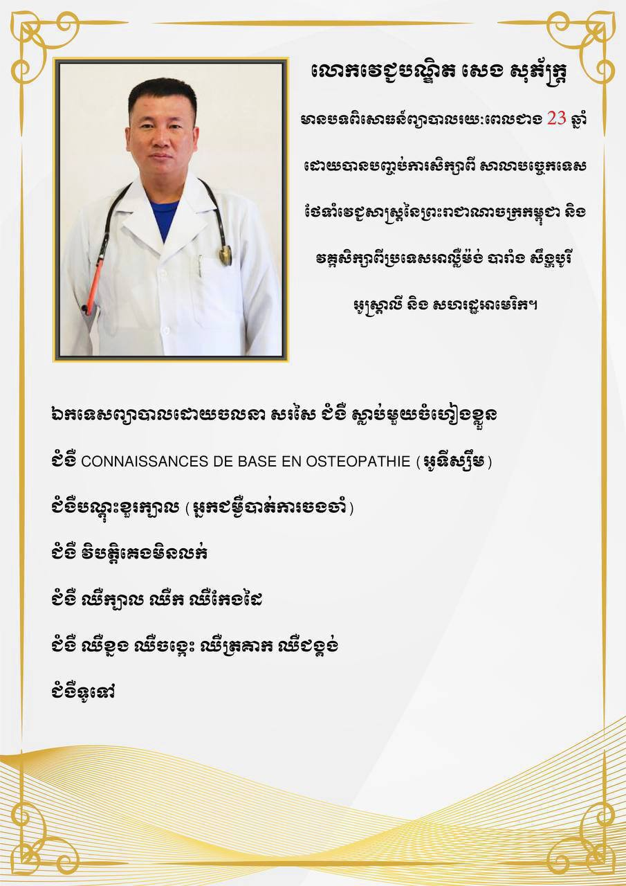
 </p>
  <p></p>
  
<div class="topnav">
 
  <a href="#" style="float:right"></a>
</div>

<div class="row">
  <div class="leftcolumn">
    <div class="card">
      <P><H2>
          <P>ហេតុអ្វីបានជាកុមារមានបញ្ហាជំងឺអូទីស្សឹម? </P>
      សំណួរនេះជាចំណោទមួយដែលម្តាយឪពុកជាច្រើននាពេលបច្ចុប្បន្ន តែងបារម្ភជារឿយៗពីការវិវត្តន៍ប្រាជ្ញានិងស្មារតីកូនរបស់ខ្លួនជានិច្ច។ 
       ទន្ទឹមគ្នានេះ ក៏បារម្ភដែរថា តើកូនរបស់ខ្លួនអាចមានបញ្ហានេះដែរទេ? បើមានតើអនាគតកូននឹងទៅជាយ៉ាងណា?
       ចម្លើយខ្លីនៃសំណួរនេះ គឺឪពុកម្តាយចាំបាច់ត្រូវឈ្វេងយល់បញ្ហានេះឱ្យបានស៊ីជម្រៅពីអាការៈអូទីស្សឹម។</H2>
    </p>
      <h2></h2>
      <h5></h5>
      <div class="fakeimg" 
    
       
        
      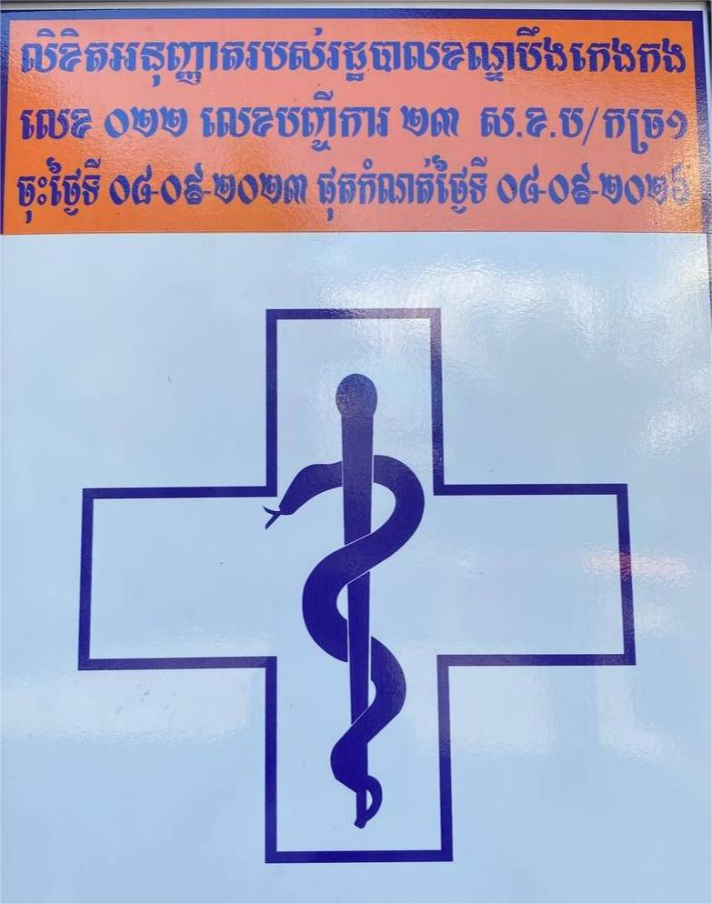
     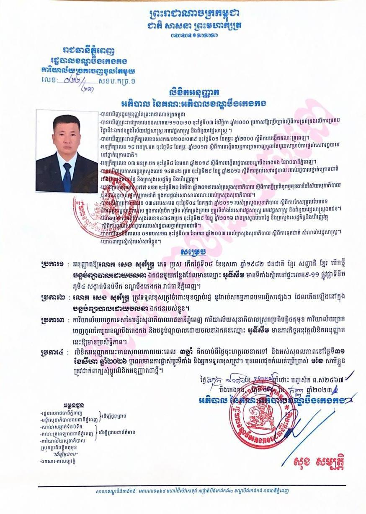
        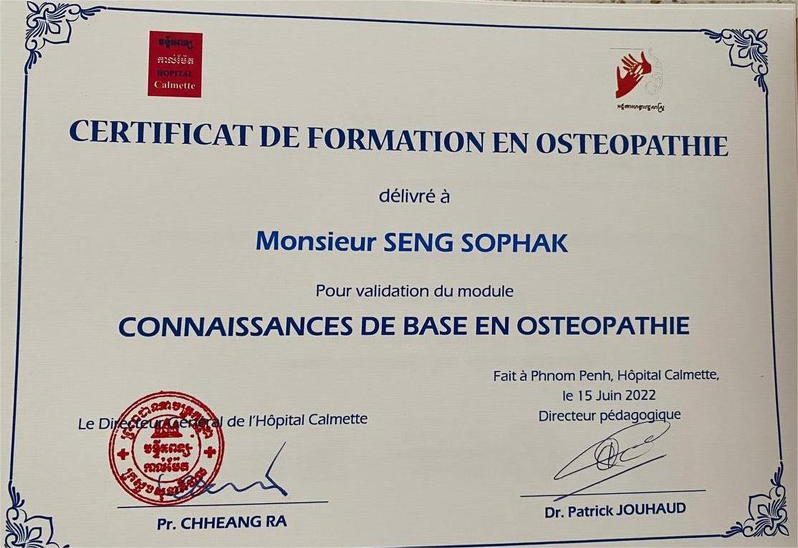
      </div>
      <p</p>
      <p><h2>បញ្ហាអូទីស្សឹម នៅតែអាថ៌កំបាំងរហូតមកដល់សព្វថ្ងៃ។ តាមការសិក្សារបស់បណ្តាញអូទីស្សឹមកម្ពុជា 
       បានឱ្យដឹងថា កុមារមានបញ្ហាអូទីស្សឹមនៅប្រទេសកម្ពុជានាពេលបច្ចុប្បន្ន មានចំនួនប្រមាណ 
       ៣ម៉ឺននាក់ (ប៉ាន់់ប្រមាណ) ហើយកុមារទាំងនោះ ត្រូវការការអប់រំឥរិយាបថ និងអប់រំបំណិនជីវិត។
        
      </p><p><ជំងឺអូទីស្សឹមកំពុងកើតច្រើនលើកុមារជុំវិញពិភពលោក ខណៈនៅស្រុកខ្មែរយើងកុមារកើតអូទីស្សឹមក៏មានចំនួនគួរឱ្យកត់សម្គាល់ដែរ។ 
              យោងតាមរបាយការណ៍អង្គការសុខភាពពិភពលោក (WHO) បានឱ្យដឹងថា ក្នុងចំណោមក្មេង១០០នាក់ មានក្មេងម្នាក់កើតអូទីស្សឹម។
       <p> តើអូទីស្សឹមជាអ្វី?​</p></h2>
      
        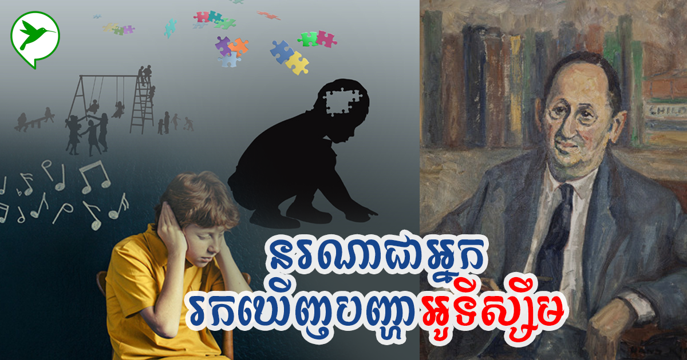
        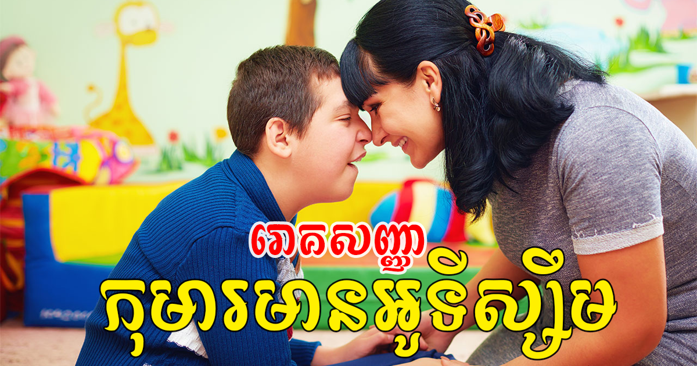
      </p>
    </div>
    <div class="card">
      <h2> <p>
        សញ្ញាសង្ស័យបីនេះ អាចបង្ហាញថាកុមារមានបញ្ហា អូទីស្សឹម គឺទី១ របៀបទំនាក់ទំនងសង្គមរបស់កុមារ 
       គឺកុមាររស់នៅមិនសូវមានទំនាក់ទនង ហាក់ដូចជាឃ្លាតឆ្ងាយពីម្តាយឪពុក មិនចូលចិត្តមើលមុខម្តាយឪពុកចំ និងមិនខ្វល់ខ្វាយពីអ្វីដែលនៅជុំវិញខ្លួន។ </h2>
      <h5></h5>
      <div class="fakeimg" style="height:320px;"> 
       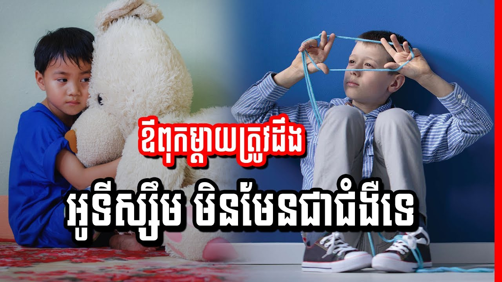
      </div>
      <h2>
      <p>ទី២ កុមារខ្សត់ភាសា ចូលចិត្តស្ងៀមស្ងាត់មិនសូវនិយាយស្តី (ក្នុងចំណោមកុមារមានបញ្ហាអូទីស្សឹម ១០០នាក់ មាន២៥% 
       គឺមិននិយាយស្តី ឬខ្លះទៀយពេលនិយាយមិនមានគោលដៅច្បាស់លាស់ ប្រយោគដាច់ៗ មិនអាចយល់បាន ឬកុមារខ្លះនិយាយដដែលៗ)។ </p><h2>
    
        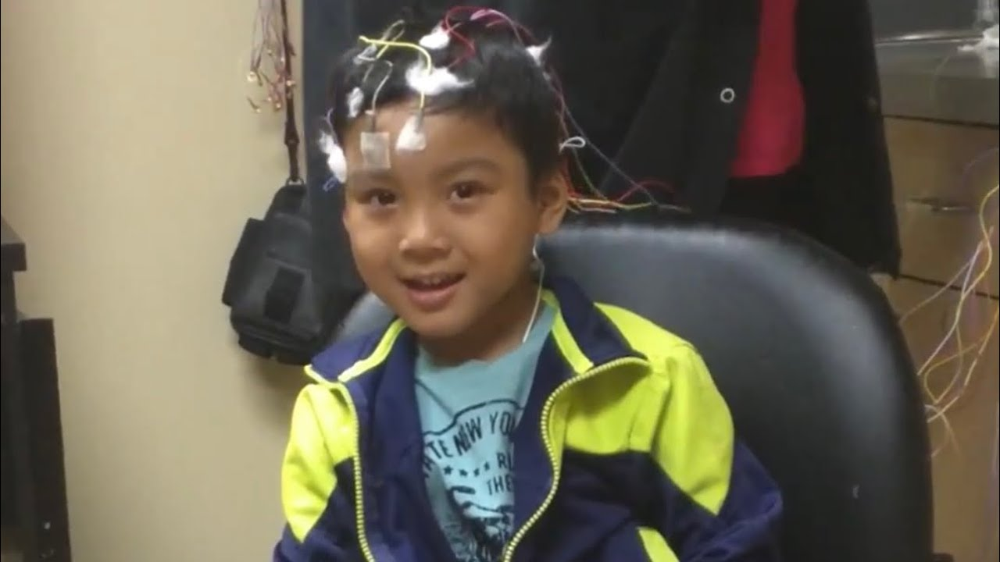
        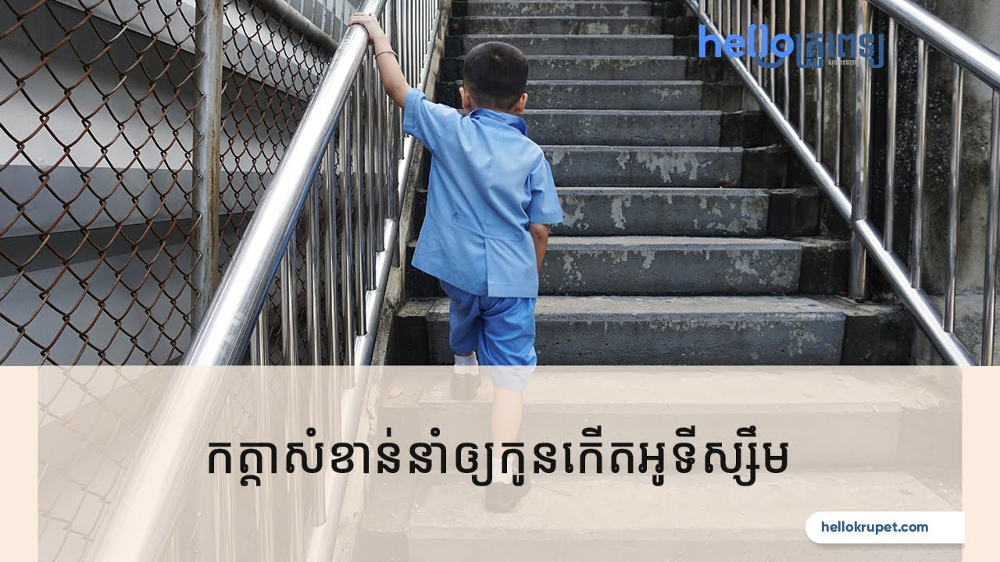
      </p>
    </div>

    <div class="card">
        <h2> ទី៣ អាកប្បកិរិយាកុមារ មានចរឹកឆេវឆាវ ឆាប់ខឹងឆាប់បាត់ ពេលខ្លះមិនមានប្រតិកម្មនឹងកម្តៅ (មិនដឹងក្តៅ មិនដឹងត្រជាក់) កុមារមិនដឹងពីរសអាហារ
         ដើរចង្អើតជើង លេងអ្វីដដែលៗ និងសីតុណ្ហភាពក្នុងខ្លួនប្រែប្រួលលឿនរហ័ស។ ប៉ុន្តែលក្ខណៈដែលអាចសម្គាល់បានថា
         កុមារមានបញ្ហាអូទីស្សឹមពិតប្រាកដ គឺត្រូវឆ្លងកាត់អ្នកជំនាញវាយតម្លៃស្ថានភាពកុមារជាក់ស្តែង។</h2>
        <h5></h5>
        <div class="fakeimg" style="height:320px;">
         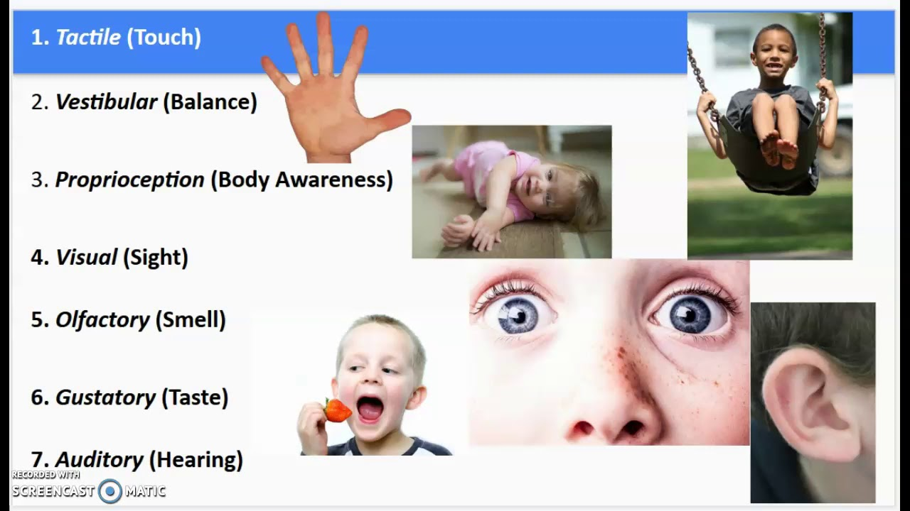
         </div>

       
       <p> <h2> </h2>
          </p>
      </div>


  </div>
  <div class="rightcolumn">
    <div class="card">
     
     
     <div class="fakeimg" style="height:300px;"> 
      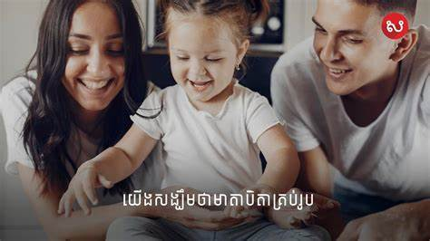
    </div>
      </div>
     
    
    </div> <h2>គួរកត់សម្គាល់ថា ការកំណត់ថា កុមារមានបញ្ហាអូទីស្សឹម (Autism) ត្រូវបានកំណត់និងរកឃើញដំបូងបង្អស់ក្នុងពិភពលោក នៅក្នុងឆ្នាំ ១៩៤៣ ដោយលោក Leo Kanner អ្នកចិត្តសាស្ត្រកុមារ នៅសាកលវិទ្យាល័យ
     Johns Hopkins University School សហរដ្ឋអាម៉េរិក។ ប៉ុន្តែរហូតមកដល់ឆ្នាំ២០២០ នេះ មូលហេតុបង្កឱ្យកុមារមានបញ្ហាអូទីស្សឹម មិនទាន់មានអ្នកវិទ្យាសាស្ត្ររកឃើញច្បាស់លាស់នោះទេ។</h2>
   
       <div class="fakeimg" style="height:300px;">
   
      
    </div>
 
   <div class="card">
       <p><h2>   <p>
         នាយកប្រតិបត្តិអង្គការជំនួយនៃក្តីសង្ឃឹមសម្រាប់សហគមន៍បានបន្តនិយាយថា តាមការស្រាវជ្រាវក្នុងពិភពលោក ឆ្នាំ២០០៣ ក្នុងចំណោមកុមារ ១ពាន់នាក់ មានកុមារបីទៅបួននាក់ប៉ុណ្ណោះដែលមានបញ្ហាអូទីស្សឹម។ ប៉ុន្តែនៅពេលបច្ចុប្បន្ននេះ ក្នុងចំណោមកុមារ ១ពាន់នាក់ 
        មានបញ្ហាអូទីស្សឹមពី ១០ ទៅ ១៥ នាក់ដែលចំនួននេះកើនឡើងគួរឲ្យកត់សម្គាល់។ ទន្ទឹមគ្នានេះ អ្នកវិទ្យាសាស្ត្រកំពុងតែឆ្ងល់ថា តើហេតុអ្វីបានជាបញ្ហាកុមារអូទីស្សឹម មានការកើនឡើងយ៉ាងដូច្នេះ។
 </h2>
      </p>
      <div class="fakeimg"><p> 
       
        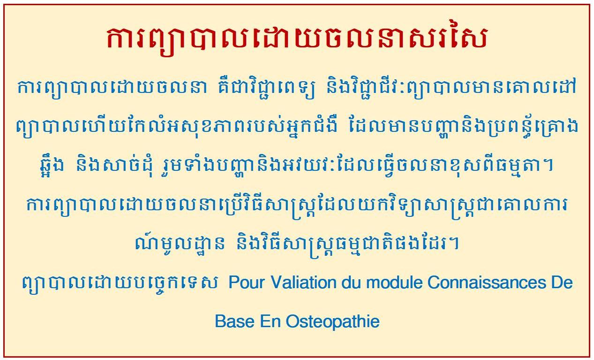
        
        </p></div>
      <div class="fakeimg"><p>
       
      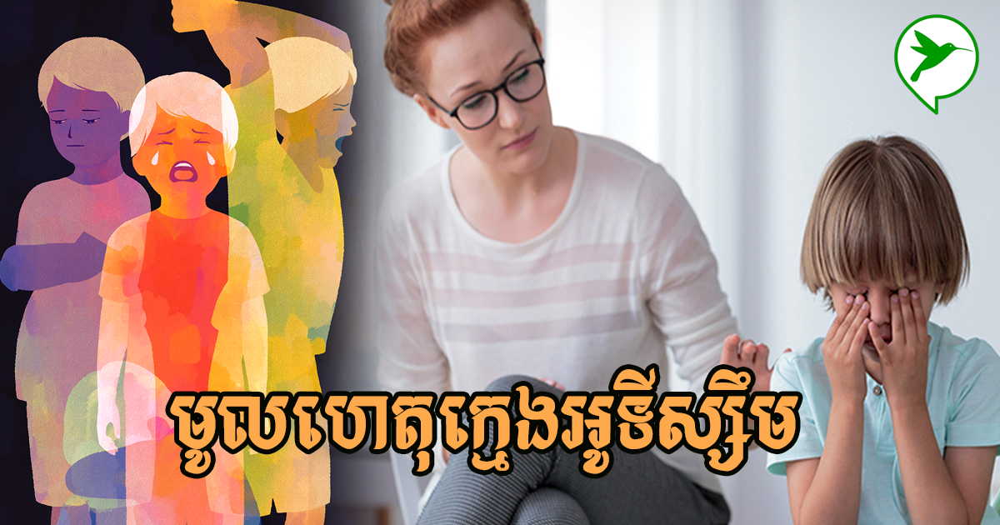
       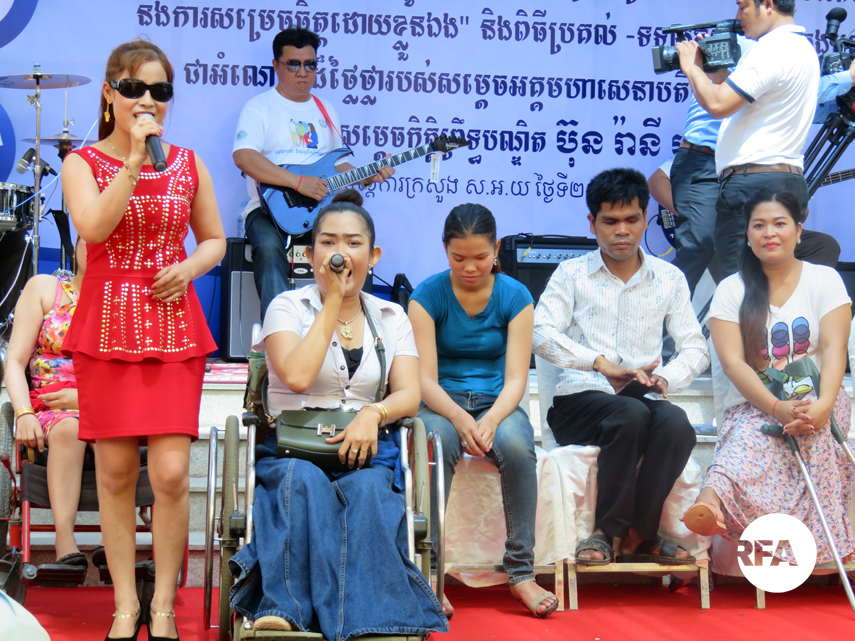
    
    </p></div>
      <div class="fakeimg"><p>
       
      
       
    </p></div>
    </div>
    <div class="card"> 
      <h2>លោក ឯម ច័ន្ទមករា អគ្គលេខាធិការនៃអគ្គលេខាធិការដ្ឋានក្រុមប្រឹក្សាសកម្មភាពជនពិការនៃក្រសួងសង្គមកិច្ចកម្ពុជាបានមានប្រសាសន៍ថា
       ក្នុងរយៈពេលប៉ុន្មានឆ្នាំចុងក្រោយនេះ ការយល់ដឹងរបស់កុមារអំពីជំងឺអូទីស្សឹមបានបន្តកើនឡើង ហើយចំនួនឪពុកម្តាយដែលបញ្ជូនកុមារដែលមានជំងឺអូទីស្សឹមមាន
       បានកើនឡើង។ ការអប់រំពិសេស និងស្វែងរកសេវាកម្មគាំទ្រវិជ្ជាជីវៈ។ លោកថា ក្នុងឆ្នាំសិក្សា២០១៧-២០១៨ កុមារ និងក្មេងជំទង់ពិការនៅកម្ពុជាមានចំនួនប្រមាណ 
       ៥៥ ០០០ នាក់ ដែលច្រើនជាស្ត្រីក្នុងចំណោមពួកគេ។ មនុស្ស 22,000 នាក់បានទទួលការអប់រំ និងចូលសាលារៀន
       ទោះបីជាមិនមានតួលេខច្បាស់លាស់សម្រាប់ជំងឺអូទីសឹមក៏ដោយ។ គេប៉ាន់ប្រមាណថា ជនពិការប្រហែល 5,000 នាក់ មានជម្ងឺអូទីស្សឹម។
       
      <p>欢迎光临北京健康管理中心进行体验和全面了解。</p></h2>
    </div>
  </div>
</div>

<div class="footer">
  <h2>#9-11, Plantinum. Sangkat Tomnup,
   Terk
  Kham Chamkar mon, Phnom Penh Cambodia
  <p>Hotline: 023 900-868  Smart: 070 388 861  Cellcard: 085 388 861 </p>
  
  </h2>
</div>

</body>
</html>
